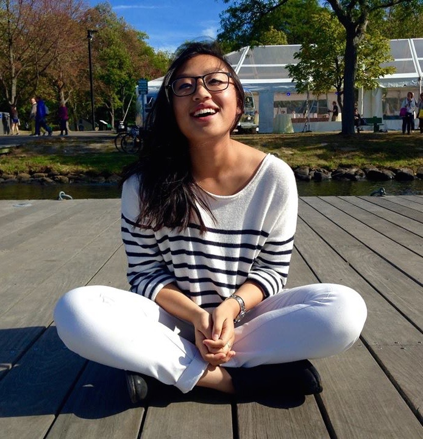

Elif Kinli
A junior at Tufts majoring in Computer Science and Quantative Economics, Elif has an interest in full stack development, having won the Best Use of TripAdvisor API at the Tufts Polyhack for her work on Trvlr.

Jade Chan
Jade is junior majoring in Computer Science and English. An executive board member at Jumbocode, Jade is committed to front end web design and development. She is partners in crime with Elif on the Trvlr project, which won the Best Use of TripAdvisor API at the Tufts Polyhack.
Marcus Mok
Marcus is a junior at Tufts majoring in Computer Science and Economics. He was a summer analyst at Ortus Capital Management, syncing live databases and implementing a framework to predict price movements. He is a consulting director at Tufts Consulting Collective overseeing tech startup projects.
Zabir Islam
Zabir is a junior, academic technology fellow at Tufts majoring in Computer Science. He was an software engineer at Tufts' Human Robot interaction lab and helped debug, maintain, refactor and write new tools for Java-based software architecture for robots.